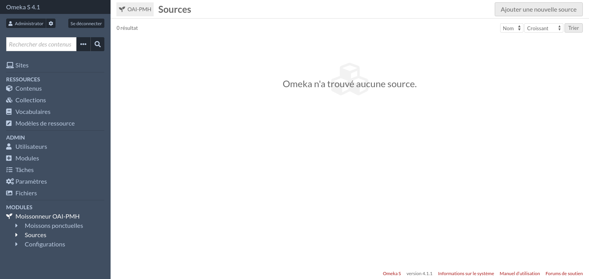
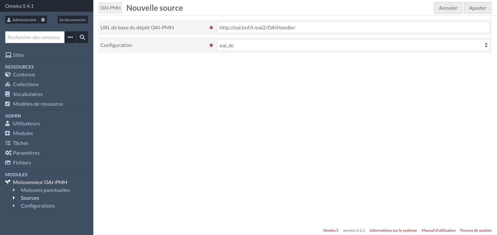
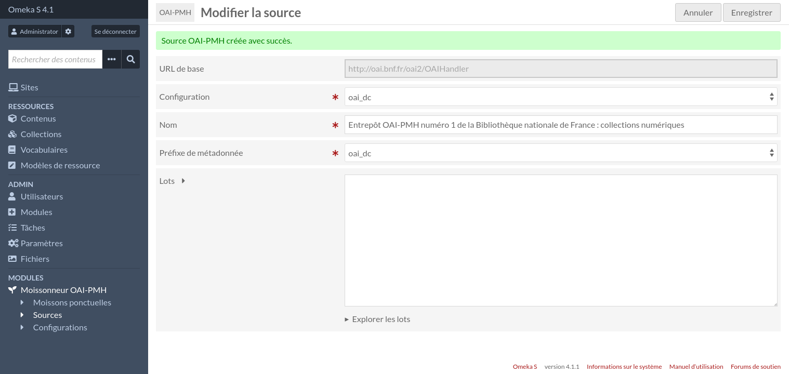
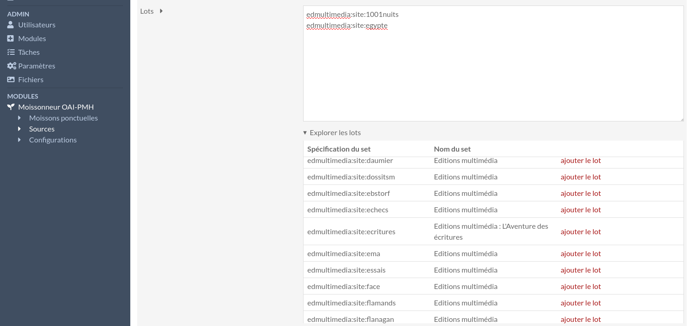
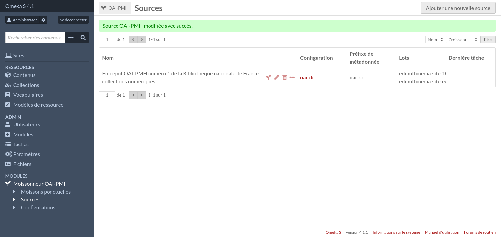
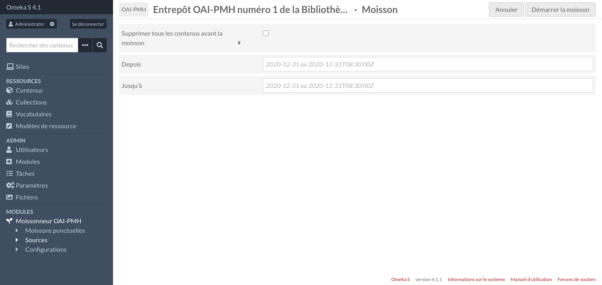
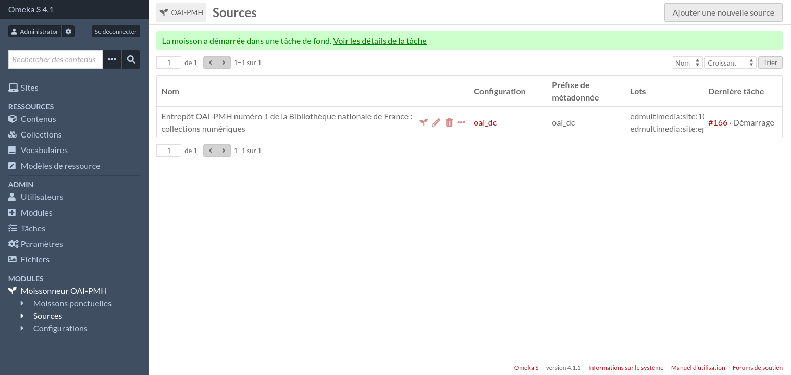
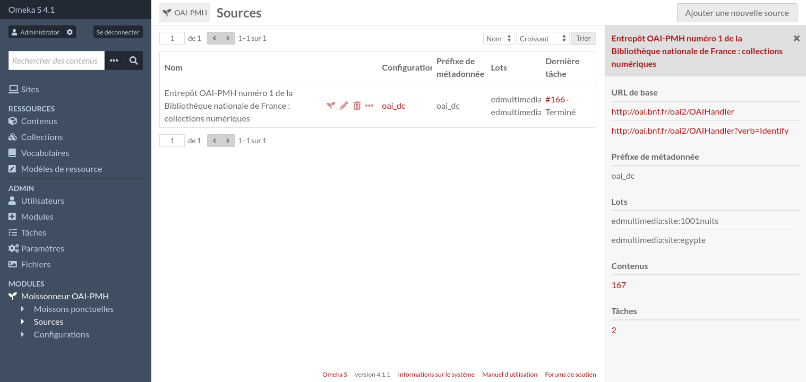
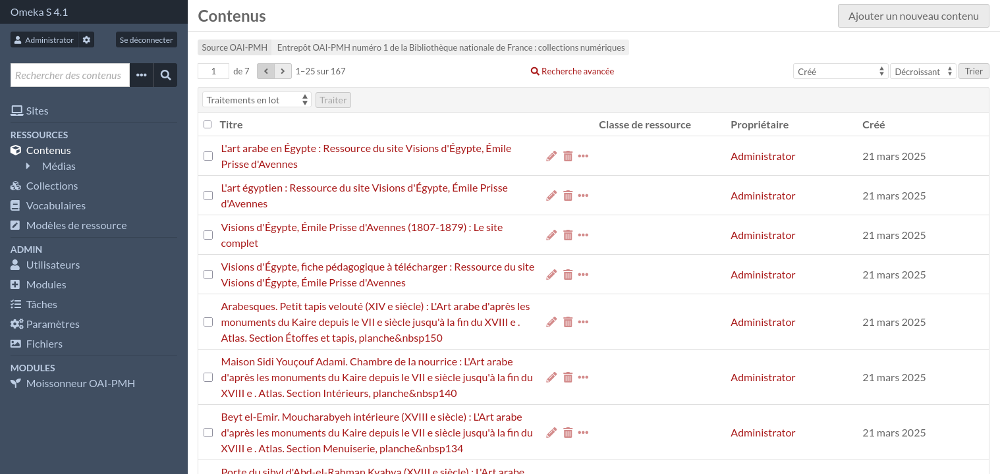
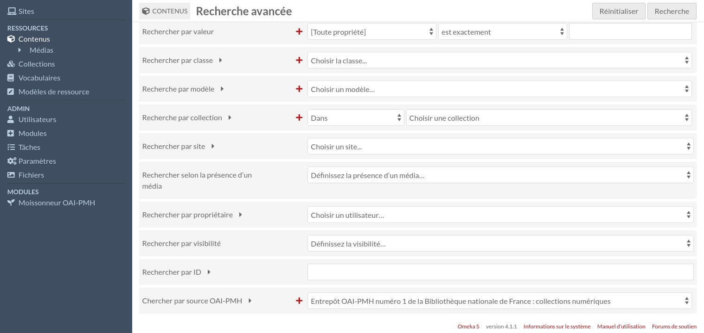

Sources
Les sources permettent de sauvegarder des informations sur des dépôts OAI-PMH afin de rendre plus faciles les futures moissons. Les sources consistent en:
Un nom,
L’URL de base d’un dépôt OAI-PMH,
Une liste de lots (ou aucun, pour moissonner tout le dépôt),
Une configuration.
Ajouter une nouvelle source
Pour créer une nouvelle source, rendez-vous d’abord sur la page des sources (accessible depuis le menu d’administration).

Puis cliquez sur le bouton « Ajouter une nouvelle source ».

Saisissez l’URL de base du dépôt OAI-PMH et sélectionnez une configuration. Si vous n’êtes pas sûrs pour la configuration, choisissez oai_dc. Vous pourrez changer la configuration plus tard si besoin.
Puis cliquez sur le bouton « Ajouter ».

Sur la page « Modifier la source », vous pouvez modifier le nom de la source (qui a été automatiquement définie avec le nom du dépôt) et le préfixe de métadonnée.
Vous pouvez également lister tous les lots disponibles et sélectionner ceux que vous souhaitez moissonner. Vous pouvez laisser le champ « Lots » vide si vous voulez moissonner tout le dépôt.

Une fois que vous avez terminé, cliquez sur le bouton « Sauvegarder les changements ».

Moissonner une source
Depuis la page des sources, vous pouvez lancer le moissonnage en clique sur l’icône de plant.

Remplissez le formulaire si besoin, puis cliquez sur le bouton « Démarrer la moisson ».

La moisson est en train d’être faite en tâche de fond. Quand la tâche sera finie, vous pourrez avoir la liste des contenus moissonnés en cliquant l’icône « trois points », puis sur le nombre sous la section « Contenus », dans la barre latérale.


Vous pouvez affiner la recherche en clique sur « Recherche avancée » comme d’habitude.

Pour configurer la manière selon laquelle les contenus sont créés, lisez la section suivante: Configurations.